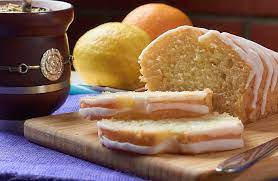
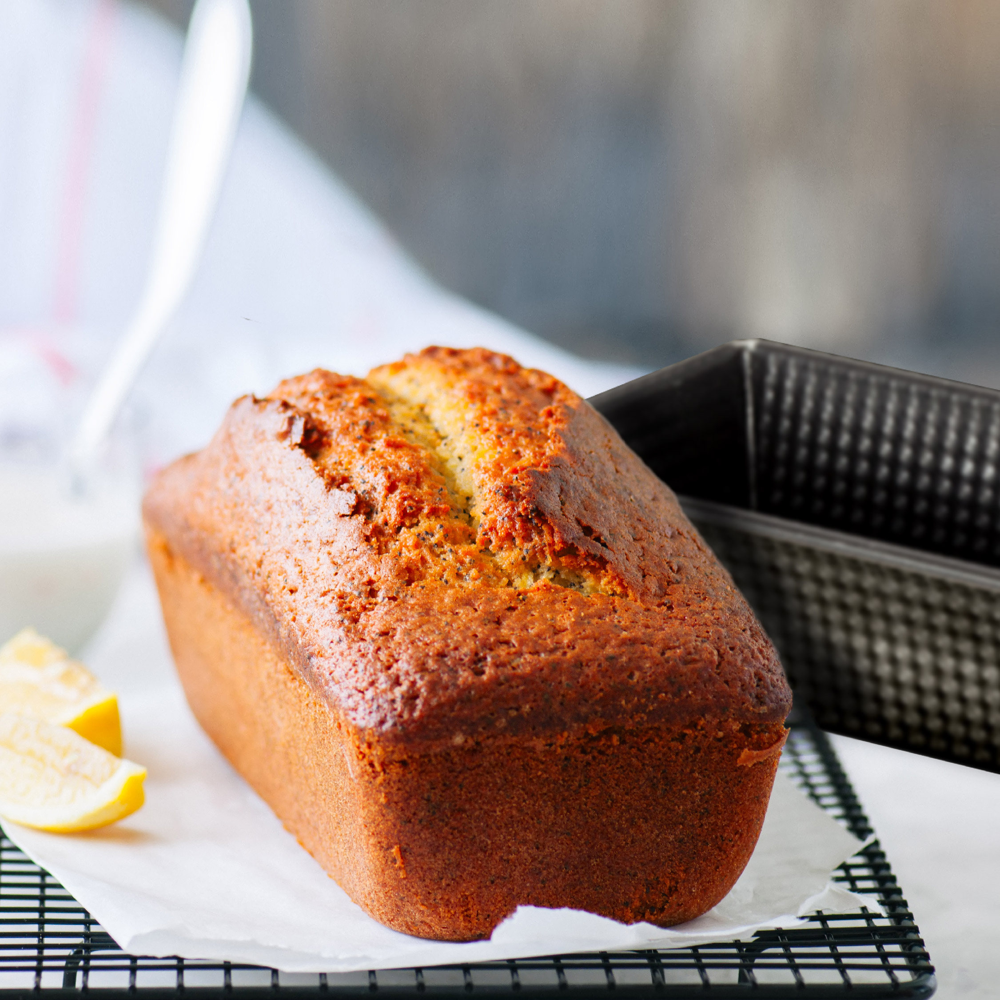
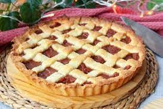
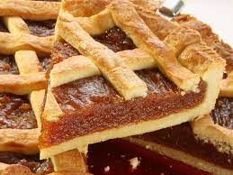

Recetas Dulces
Para los que no se empalagan...

Budín Inglés

Budín Inglés

El budín más esponjoso que vas a probar en tu vida, ni te vas a dar cuenta que no contiene gluten.
Ingredientes
- Huevos 2
- Azúcar tres cuartos de taza
- Aceite neutro media taza
- Leche media taza
- Premezcla comercial 2 tazas
- Esencia de Vainilla 1 cucharada
- Polvo para Hornear 2 cucharadas
Procedimiento
- Batir los huevos con el azúcar hasta espumar
- Agregar el aceite y la leche y seguir batiendo
- Unir la esencia de vainilla y cambiar batidor por espátula
- Agregar de a poco la premezcla con el polvo de hornear e integrar bien
- Hornear a 180º durante 40 minutos aproximadamente
- Preparate unos mates y disfrutá!
Pasta Frola

Pasta Frola

La descendiente argentina de la crostata italiana.
Ingredientes
- Huevos 1
- Azúcar 100 gr
- Manteca 8o gr
- Premezcla comercial 200 gr
- Esencia de Vainilla 1 cucharada
- Polvo para Hornear 1 cucharada
- Dulce de membrillo o batata 500 gr
- Algún licor o ron a elección
Procedimiento
- Batir la manteca pomada con el azúcar
- Agregar el huevo con la escencia de vainilla
- Añadir la premezcla junto con el polvo de hornear
- Formar una masa y llevar a la heladera por una hora
- Cortar el dulce elegido en cubos y mezclar con un chorrito del licor
- Levar a microondas o al fuego hasta que se transforme en una crema
- Estirar la masa y colocar la mitad en un molde redondo.
- La mitad restante se debe cortar en tiras y reservar
- Agregar el dulce en la masa y colocar las tiras de masa a modo de rejilla
- Hornear a 180ªC hasta que la masa dore
- Hacete unos mates y ¡disfrutà!